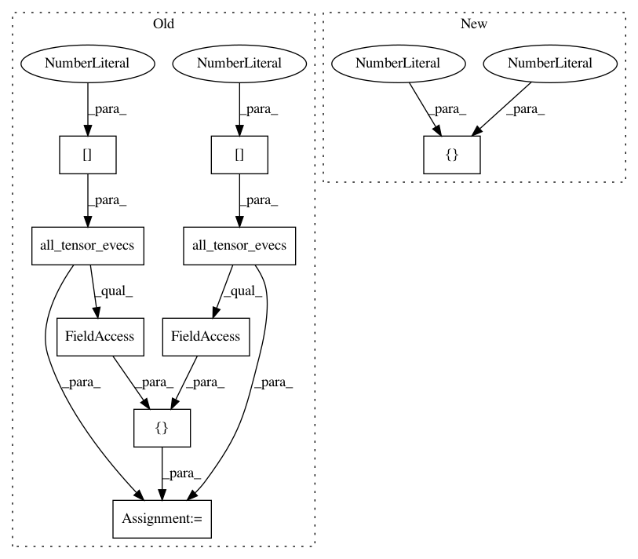

c62e2d8362d0dc21c1b130aa59196d9684eca707,dipy/reconst/tests/test_csdeconv.py,,test_odfdeconv,#,90
Before Change
sphere = get_sphere("symmetric362")
mevecs = [all_tensor_evecs(sticks[0]).T,
all_tensor_evecs(sticks[1]).T]
odf_gt = multi_tensor_odf(sphere.vertices, [0.5, 0.5], mevals, mevecs)
e1 = 15.0
After Change
sphere = get_sphere("symmetric362")
odf_gt = multi_tensor_odf(sphere.vertices, mevals, angles, [50, 50])
e1 = 15.0
e2 = 3.0
In pattern: SUPERPATTERN
Frequency: 3
Non-data size: 9
Instances
Project Name: nipy/dipy
Commit Name: c62e2d8362d0dc21c1b130aa59196d9684eca707
Time: 2013-12-21
Author: garyfallidis@gmail.com
File Name: dipy/reconst/tests/test_csdeconv.py
Class Name:
Method Name: test_odfdeconv
Project Name: nipy/dipy
Commit Name: c62e2d8362d0dc21c1b130aa59196d9684eca707
Time: 2013-12-21
Author: garyfallidis@gmail.com
File Name: dipy/reconst/tests/test_csdeconv.py
Class Name:
Method Name: test_r2_term_odf_sharp
Project Name: nipy/dipy
Commit Name: c62e2d8362d0dc21c1b130aa59196d9684eca707
Time: 2013-12-21
Author: garyfallidis@gmail.com
File Name: dipy/reconst/tests/test_csdeconv.py
Class Name:
Method Name: test_csdeconv